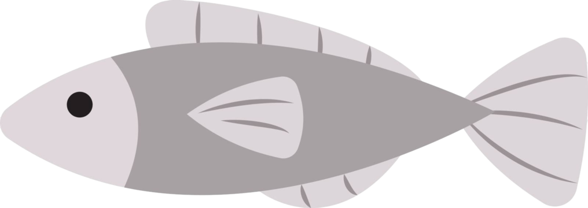

My Projects
Here are some of the projects I have been working on. Click on the project titles to see their GitHub repositories!
July 2024 - Present
- Automated trading based on pricing inefficiencies of options contracts.
- Using the Robinhood API, I get live quotes on options contracts.
- With data transformations, potential trades based on my hypothesis, SAK, are identified.
- If a trade is identified, a limit order is placed through the API in the Python script.
April 2025
- Get live weather and water data for an AI-generated fishing report in different spots.
- Data is collected from United States Geological Survey and the National Weather Service by web scraping with Beautiful Soup.
- The collected data is used to create multiple variables which prompt a Local LLM (gemma3:4b) for a fishing report based on real-time data.
Fishing Database
August 2023 - Present
- Store all catches and weather data in a SQL database, as seen in the fishing dashboard.
- Each fish I catch is logged in Excel with useful information such as Date, Length, Weight, and Geographic Coordinates.
- Using Python code, I get the weather data for each location by making requests to the National Weather Service API.
- Python scripts format the data into CSVs, which are imported into their corresponding tables in a SQL Server Database.
- Using a SQL View, I connect each catch to all of the weather data for the corresponding location, date, and time.
- The SQL View and tables are queried by a Power BI Report, and embedded in this site as the Fishing Dashboard.